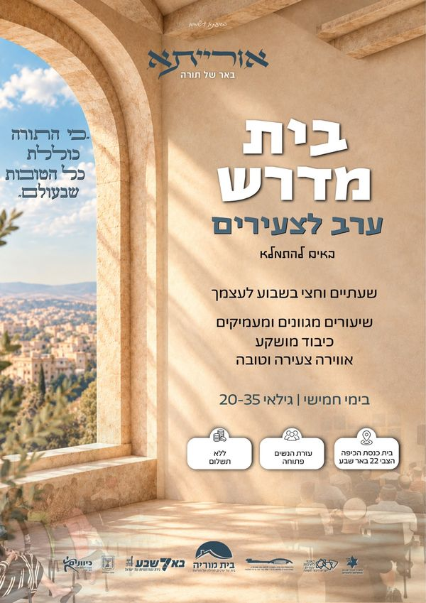

בית מדרש ערב לצעירים · גילאי 20-35
אורייתא, באר של תורה
באים להתמלא. שעתיים וחצי בשבוע לעצמך: שיעורים מגוונים ומעמיקים, כיבוד מושקע ואווירה צעירה וטובה.
- מתי
- בימי חמישי, 20:00כל שבוע
- איפה
- בית הכנסת הכיפההצבי 22, באר שבע
- למי
- גילאי 20-35עזרת הנשים פתוחה
- עלות
- ללא תשלוםכולל כיבוד

לחצו להגדלה
"כי התורה כוללת כל הטובות שבעולם"
השבוע באורייתא
הנושא של הערב הקרוב יופיע כאן כשיפורסם. בינתיים: יום חמישי, 20:00, בבית הכנסת.
השיעורים של מרצים אורחים, ומתחלפים מערב לערב. מדי פעם הערב מתקיים במקום אחר, ואז זה כתוב כאן.